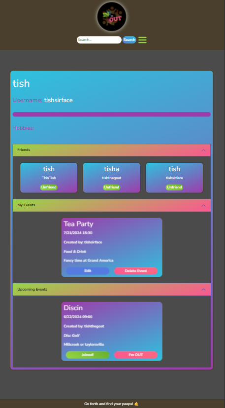

Featured Work
In or Out
Create and join activities with friends
Open your eyes, it's Now
Hi! My name is Tish. I've spent most of my life in Utah, with short stints in Idaho and Alaska. I have some experience in SEO, having worked with a company that provided services to local businesses. I love to create and have been crocheting for over 20 years; now I'm excited to start producing digital projects. When I'm not creating, I enjoy disc golf, spending time with my dogs, and traveling. Feel free to check out my works and come back often to see my new projects—there will be many!
Create and join activities with friends
Simple blog to keep your thoughts locally
Find the what the weather is like in your most important places